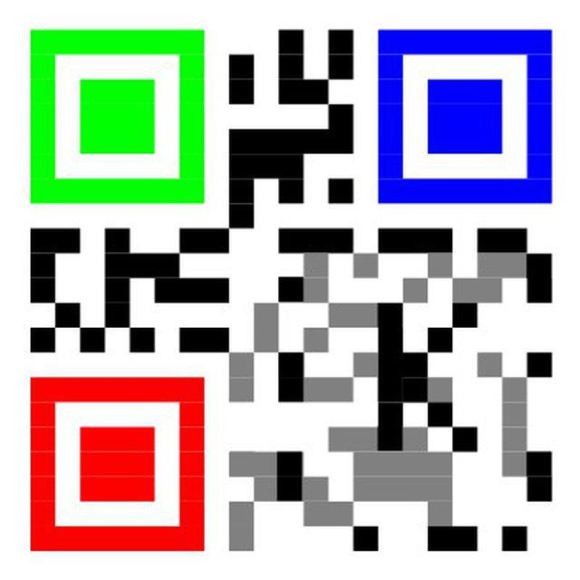

Contacto
kmoragas tiene como Alma Mater el Tecnológico de Costa Rica. Como cualquier otro geek me agrada el mundo Unix, pero más que ello me agrada más defender los Derechos Digitales, por lo que tocó agregar más hoobies como: privacidad, InfoSec, HPC, Virtualización, Sistemas Operativos, Neurociencias Computacionales y Natación. Me gusta mucho Zelda y las Quesoburguesas (lo siento como en McDonalds). Me gusta también un mundo donde la información se comparta, sea libre, todos tengamos acceso al conocimiento y donde el pueblo espíe al gobierno y la gente tenga secretos.
Sueño con un mundo donde comamos mejor y el alimento sea mejor distribuido, Creo que las soluciones libres pueden permitir cumplir ese sueño, donde en mi país, un agricultor quiera que su hijo también cultive la tierra, para que él tenga un mejor futuro.
Me gusta pensar en una Democracia Participativa real, donde todos podamos hablar sin miedo y que ni siquiera exista la autocensura.
PGP ID: F258EDCB - FingerPrint: 3915 A5A9 959C D18F 0A89 B47E FB4B 55F5 F258 EDCB - Twitter: @kmoragas
